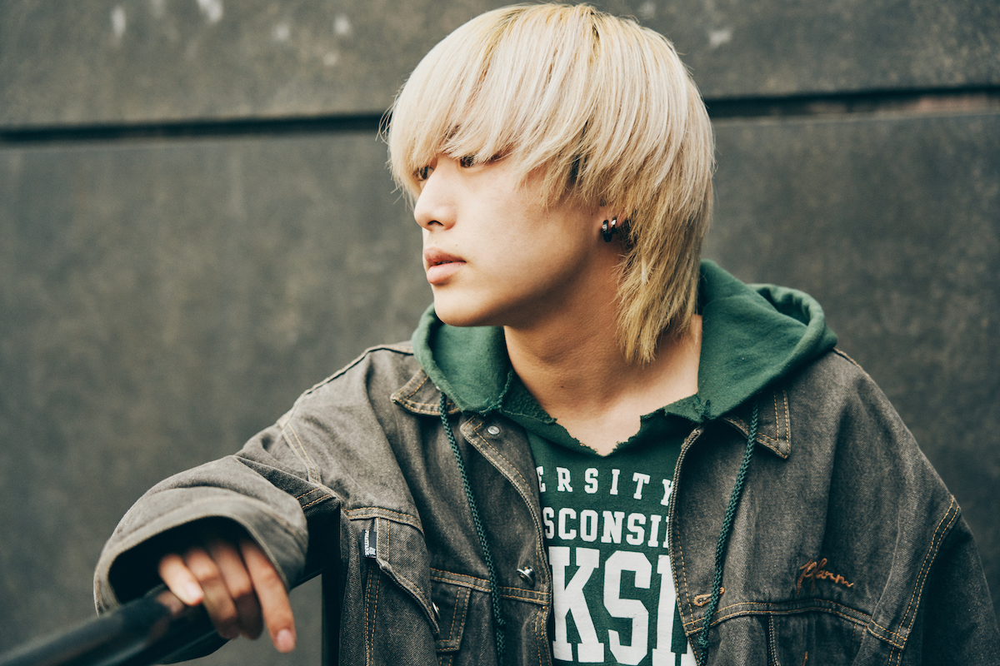
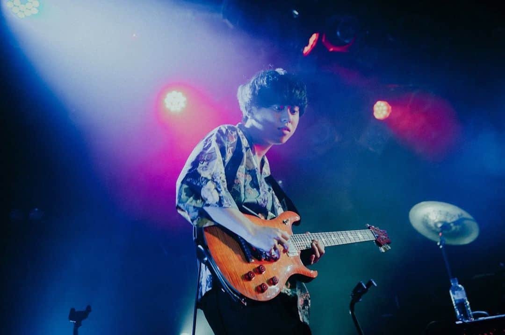
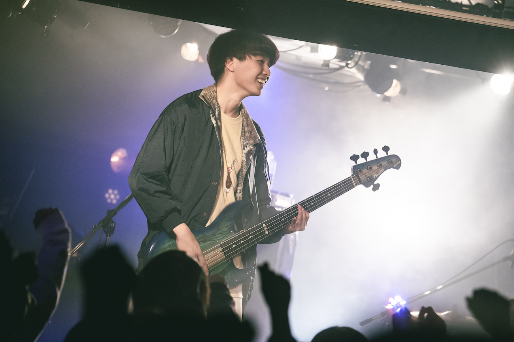
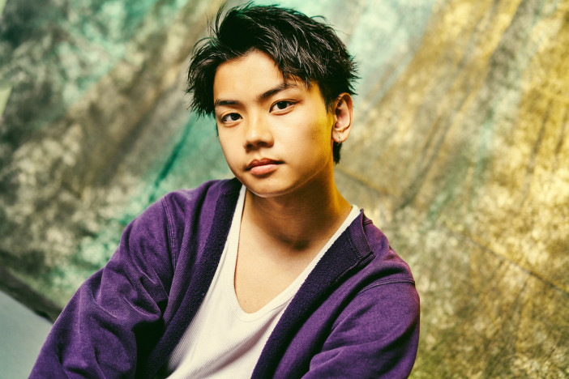

かやゆー
かやゆー(Vo/Gt.)
本名は萱沼 勇斗（かやぬま ゆうと）。山梨県富士吉田市出身。
大学に行くために上京、現在は神奈川県在住。特技は手品。
幼稚園〜中学までサッカーをやり、高校時代はボート部に所属していた。
ギターを始めるきっかけは小学6年の頃の誕生日に両親にアコースティックギターを買ってもらったこと。
後に中学で友達に初心者セットを借りてエレキギターにも触るようになった。
元々SNSに弾き語り動画を投稿していた。
初めて弾き語りをした曲は同じ山梨県出身のレミオロメンの「3月9日」。
Twitterにてバンドメンバーを募集してヤングスキニーを結成した発起人。
ゴンザレス
ゴンザレス(Gt.)
・メンバー最年長。
・学生時代は野球部に所属していた。
・大学からギターを始めた。
・2023年3月に大学を卒業した。
りょうと
りょうと(Ba.)
学生時代はバスケットボール部に所属していた。
前任のベースが抜けてから暫くサポートメンバーとして活動していたが、いつの間にか正式メンバーになっていた。
しおん
しおん(Dr.)
メンバー最年少。
学生時代はバスケットボール部に所属していた。
前任のメンバーが抜けた際、再度Twitterにて募集をかけたところ最終的に二人まで絞られたときに,かやゆーとゴンザレスはもう一人を推していたが、りょうとがこの人じゃなきゃやらないと言ったためメンバー入りが決定した。